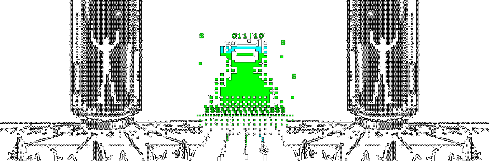

Hello!
My name is Everett, but I typically go by my github handle @XORMANCER. I am a security researcher who is passionate about low level research and exploitation.
🚩 CTF - The Necromancer
A walkthrough of the vulnhub box - The Necromancer 1
🦄 PWN - Vulnserver
Exploiting the TRUN command within the vulnserver binary
All profile art is a result of modifying the works of Mistigris computer arts, and has been created for personal use.
The eldritch tomb breathes as you unseal its ancient bindings, forgotten curses searing your mind as you ingest its forbidden knowledge.